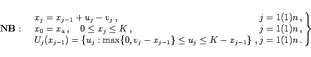

Inhalt Index DeskTop Bronstein

 Optimierung Diskrete dynamische Optimierung Beispiele zur Anwendung der Funktionalgleichungsmethode Optimale Einkaufspolitik
Optimierung Diskrete dynamische Optimierung Beispiele zur Anwendung der Funktionalgleichungsmethode Optimale Einkaufspolitik


Das Problem der Bestimmung einer optimalen Einkaufspolitik aus Abschnitt Einkaufsproblem
| (18.134a) |
|  | (18.134b) |
führt auf die Funktionalgleichungen